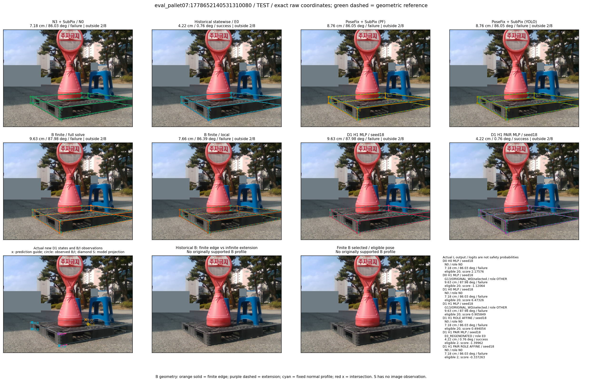

Whole-pallet pose errors; reference is a fixed geometric annotation, not certified physical GT.


Scores are uncalibrated logits. N0 retention is a numerical pose alias; it differs from H0 none or B fallback. B/I and profiles in baseline/B panels are original observations; L panels use new D1 observations. Only one deterministic supported B query is shown in a thumbnail; full support counts are below. Grey privacy rectangles edit the display copy only and are unrelated to O states; all observations were measured on original pixels. Thumbnails use JPEG quality85; detailed scientific panels are PNG.
| Method | Whole pose / cm, deg | Actual source | Selected ID | Score | Archived candidates | Eligible | N0 retained | H0 none | Fallback | Finite profiles |
|---|---|---|---|---|---|---|---|---|---|---|
| Raw YOLO + F | 7.48 cm / 86.46 deg / failure | OTHER | None | N/A | N/A | N/A | False | N/A | None | N/A |
| N3 + SubPix / N0 | 7.18 cm / 86.03 deg / failure | N0 | None | N/A | N/A | N/A | True | N/A | None | N/A |
| Historical statewise / E0 | 4.22 cm / 0.76 deg / success | E0_REGENERATED | None | N/A | N/A | N/A | False | N/A | False | N/A |
| PoseFix raw | 8.05 cm / 86.12 deg / failure | OTHER | None | N/A | N/A | N/A | False | N/A | None | N/A |
| PoseFix + SubPix (PF) | 8.76 cm / 86.05 deg / failure | OTHER | None | N/A | N/A | N/A | False | N/A | False | historical support records 9; finite audit N/A |
| PoseFix + SubPix (YOLO) | 8.76 cm / 86.05 deg / failure | OTHER | None | N/A | N/A | N/A | False | N/A | False | historical support records 9; finite audit N/A |
| Historical L, seed18 | 7.18 cm / 86.03 deg / failure | N0 | N0 | N/A | 34 | 33 | True | True | True | N/A |
| Historical B fixed bank | 9.63 cm / 87.98 deg / failure | OTHER | G13/ORIGINAL_WD/sample/0 | N/A | N/A | N/A | False | N/A | False | N/A |
| Historical B full | 9.63 cm / 87.98 deg / failure | OTHER | G13/ORIGINAL_WD/sample/0 | N/A | N/A | N/A | False | N/A | False | N/A |
| Historical edge full | 9.63 cm / 87.98 deg / failure | OTHER | G13/ORIGINAL_WD/sample/0 | N/A | N/A | N/A | False | N/A | False | N/A |
| Historical AB full | 9.63 cm / 87.98 deg / failure | OTHER | NEW/AB/SWAPPED_WD/h1/G10/ORIGINAL_WD/sample/6/PROPOSED_NATIVE_YAW_1 | N/A | N/A | N/A | False | N/A | False | N/A |
| B finite / fixed bank | 9.63 cm / 87.98 deg / failure | OTHER | G13/ORIGINAL_WD/sample/0 | N/A | N/A | N/A | False | N/A | False | 0/0 |
| B finite / full solve | 9.63 cm / 87.98 deg / failure | OTHER | G13/ORIGINAL_WD/sample/0 | N/A | N/A | N/A | False | N/A | False | 0/0 |
| B finite / local | 7.66 cm / 86.39 deg / failure | OTHER | NEW_FINITE/B/ORIGINAL_WD/h0/N0_LOCAL_SAME_PHYSICAL_POSE/ORIGINAL_WD | N/A | N/A | N/A | False | N/A | False | 0/0 |
| Edge finite / full solve | 9.63 cm / 87.98 deg / failure | OTHER | G13/ORIGINAL_WD/sample/0 | N/A | N/A | N/A | False | N/A | False | 0/0 |
| D0 H0 MLP / seed18 | 7.18 cm / 86.03 deg / failure | N0 | N0 | 2.1757609844207764 | 21 | 20 | True | True | True | N/A |
| D0 H0 MLP / seed19 | 7.18 cm / 86.03 deg / failure | N0 | N0 | 2.539158344268799 | 21 | 20 | True | True | True | N/A |
| D0 H0 MLP / seed20 | 7.18 cm / 86.03 deg / failure | N0 | N0 | -0.16035202145576477 | 21 | 20 | True | True | True | N/A |
| D0 H1 MLP / seed18 | 9.63 cm / 87.98 deg / failure | OTHER | G13/ORIGINAL_WD/selected | -1.1206411123275757 | 21 | 20 | False | False | False | N/A |
| D0 H1 MLP / seed19 | 9.63 cm / 87.98 deg / failure | OTHER | G13/ORIGINAL_WD/selected | -1.148557424545288 | 21 | 20 | False | False | False | N/A |
| D0 H1 MLP / seed20 | 9.63 cm / 87.98 deg / failure | OTHER | G13/ORIGINAL_WD/selected | -2.152435541152954 | 21 | 20 | False | False | False | N/A |
| D1 H0 MLP / seed18 | 7.18 cm / 86.03 deg / failure | N0 | N0 | 6.473261833190918 | 21 | 20 | True | True | True | N/A |
| D1 H0 MLP / seed19 | 7.18 cm / 86.03 deg / failure | N0 | N0 | 6.3476738929748535 | 21 | 20 | True | True | True | N/A |
| D1 H0 MLP / seed20 | 7.18 cm / 86.03 deg / failure | N0 | N0 | 5.800084590911865 | 21 | 20 | True | True | True | N/A |
| D1 H1 MLP / seed18 | 9.63 cm / 87.98 deg / failure | OTHER | G13/ORIGINAL_WD/selected | 0.9058489799499512 | 21 | 20 | False | False | False | N/A |
| D1 H1 MLP / seed19 | 9.63 cm / 87.98 deg / failure | OTHER | G13/ORIGINAL_WD/selected | 0.6301814317703247 | 21 | 20 | False | False | False | N/A |
| D1 H1 MLP / seed20 | 9.63 cm / 87.98 deg / failure | OTHER | G13/ORIGINAL_WD/selected | 0.9302525520324707 | 21 | 20 | False | False | False | N/A |
| D1 H1 ROLE AFFINE / seed18 | 7.18 cm / 86.03 deg / failure | N0 | N0 | 0.49405431747436523 | 21 | 20 | True | False | False | N/A |
| D1 H1 ROLE AFFINE / seed19 | 7.18 cm / 86.03 deg / failure | N0 | N0 | 0.0047866664826869965 | 21 | 20 | True | False | False | N/A |
| D1 H1 ROLE AFFINE / seed20 | 7.18 cm / 86.03 deg / failure | N0 | N0 | 0.3198869526386261 | 21 | 20 | True | False | False | N/A |
| D1 H1 PAIR MLP / seed18 | 4.22 cm / 0.76 deg / success | E0_REGENERATED | E0_REGENERATED | -1.3996169567108154 | 21 | 2 | False | False | False | N/A |
| D1 H1 PAIR MLP / seed19 | 4.22 cm / 0.76 deg / success | E0_REGENERATED | E0_REGENERATED | -1.2939273118972778 | 21 | 2 | False | False | False | N/A |
| D1 H1 PAIR MLP / seed20 | 4.22 cm / 0.76 deg / success | E0_REGENERATED | E0_REGENERATED | -1.3706480264663696 | 21 | 2 | False | False | False | N/A |
| D1 H1 PAIR ROLE AFFINE / seed18 | 7.18 cm / 86.03 deg / failure | N0 | N0 | -0.33726319670677185 | 21 | 2 | True | False | False | N/A |
| D1 H1 PAIR ROLE AFFINE / seed19 | 7.18 cm / 86.03 deg / failure | N0 | N0 | -0.7810056805610657 | 21 | 2 | True | False | False | N/A |
| D1 H1 PAIR ROLE AFFINE / seed20 | 7.18 cm / 86.03 deg / failure | N0 | N0 | -0.4273068308830261 | 21 | 2 | True | False | False | N/A |
| Regenerated common E0 | 4.22 cm / 0.76 deg / success | E0_REGENERATED | E0_REGENERATED | N/A | N/A | N/A | False | N/A | False | N/A |